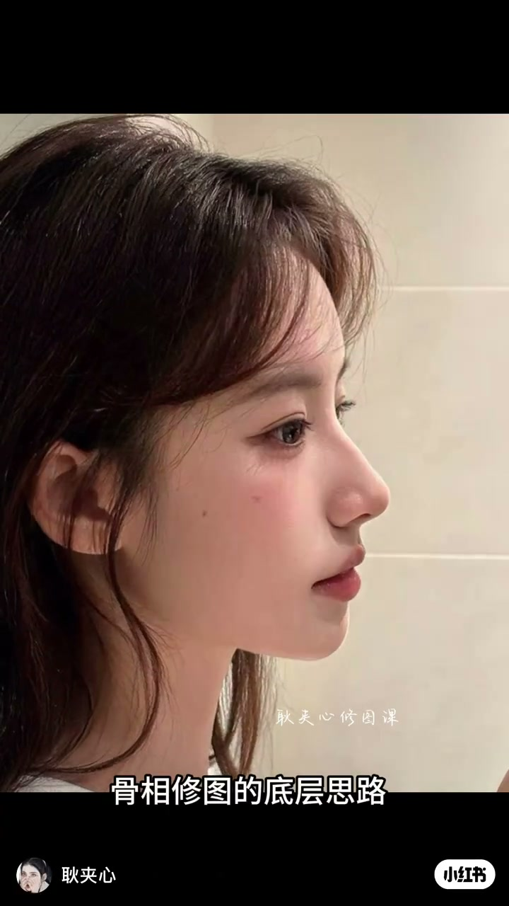
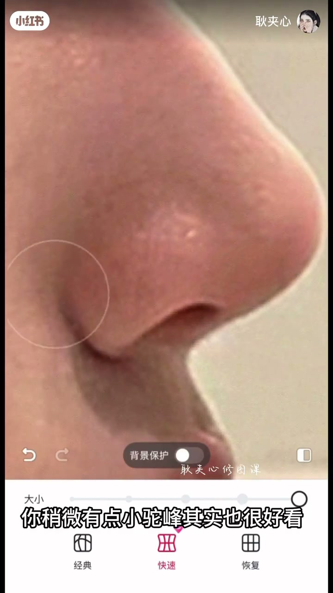
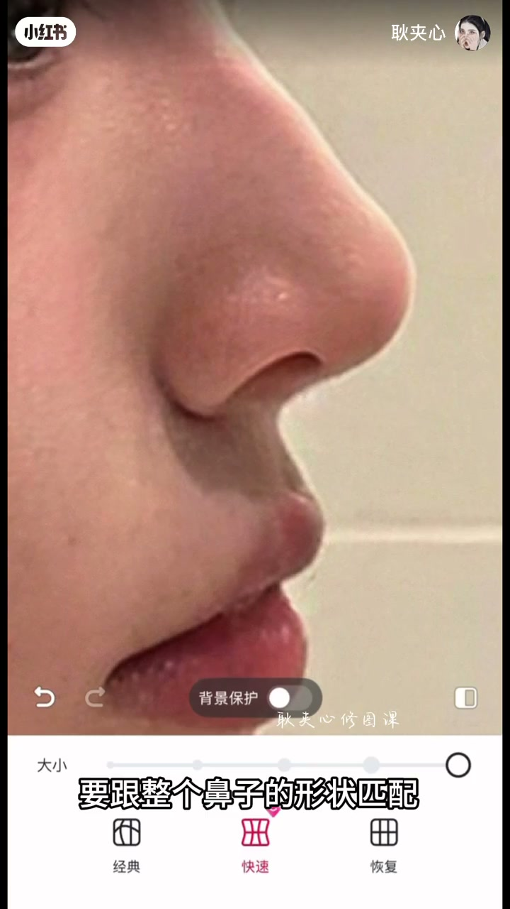
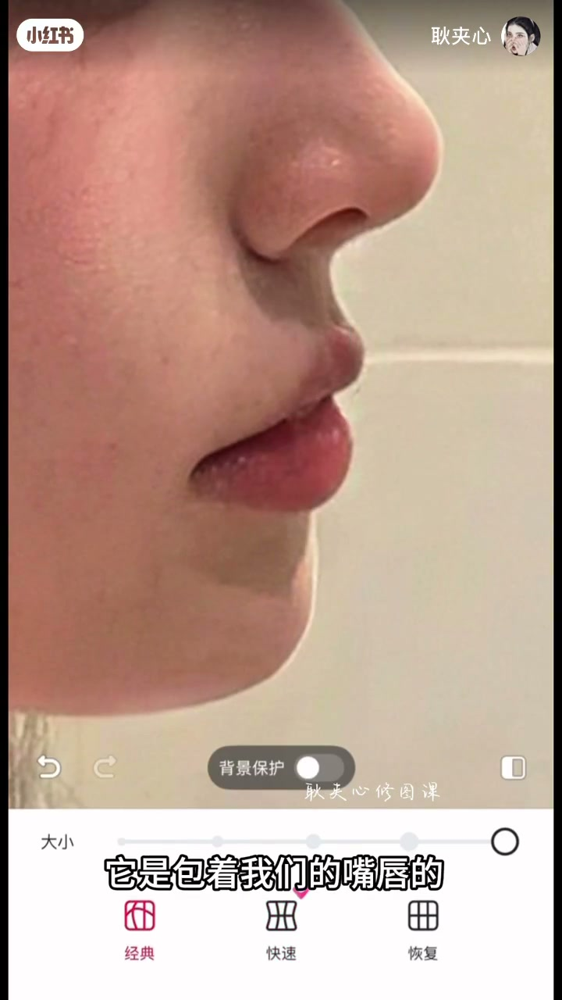
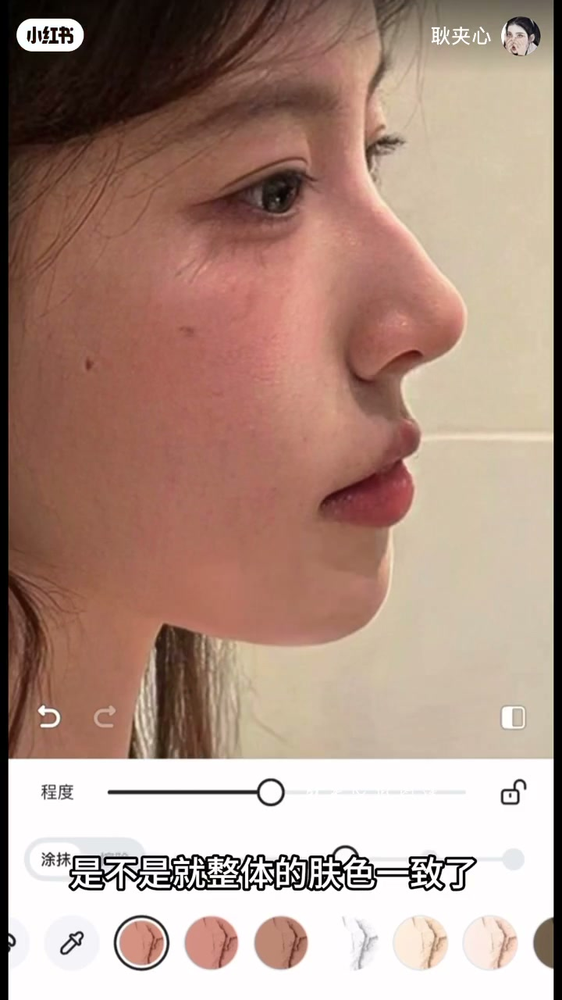

内容要点
「耿夹心骨相修图课」用手机液化演示侧脸骨相：抬鼻翼改善鼻翼旁凹陷、鼻孔上推成细长形并匹配整鼻、鼻唇角做成锐角+ C 型弧、再补下巴量感并上提下颌线。开场自称做了6年修图教学；Whisper 在约1分30秒后分段稀疏，后半以画面操作为准。
知识结构
6年修图教学；进入侧脸骨相演示。
鼻翼上抬改善凹陷；鼻不必一味修高，可留一点「小头风」；鼻孔上推成细长形。
做成锐角，并保留 C 型弧线。
补下巴量感、上提下巴；下颌角到下巴成流畅弧，必要时再锐化下颌线。
侧脸好看靠的是鼻—唇角—下巴一条连续骨相线，而不是把鼻子单独拉高。
00:00-00:49鼻翼上抬与细长鼻孔
开场点明身份：做了6年修图教学，随即进入侧脸鼻部。画面把鼻翼往上抬，字幕说明目的是改善凹陷；强调「鼻子不是修得越高越好看」，稍微保留一点「小头风」也可以。
接着鼻孔往上推，做成细长形，并强调要跟整鼻形状匹配——局部形状必须服从整体鼻形，避免鼻孔单独「立起来」。


00:49-01:29鼻唇角锐角与下颌流畅弧
鼻唇角一段要求做成锐角，并带 C 型弧线，让鼻子到上唇的过渡干净。
下巴量感不够时往侧向拉出一点；调完后把下巴区域上提，使下颌线更轻薄。下颌角到下巴连成流畅弧；若要更锋利，再单独锐化下颌线。口播在此附近变稀，后半对比图以画面为准。



完整转录（18段）
以下文本由 Whisper medium 模型自动转录，可能存在少量识别误差，已尽可能修正。
做了6年的修图图图教学
把鼻翼往上抬
改善凹陷
所以说鼻子不是说你修的越高越好看
稍微有点小头风其实也很好看
然后鼻孔也接的往上
让它大概是一个这种细长形的形状
也要跟整个鼻子的形状匹配
紧接着就是鼻唇角
这一块它要是一个锐角
要有一个这种C型的弧线
下巴的量感也是不够的
要往右边稍微拉出来一点
整个下巴还有鼻子它是包着我们的最纯的
调完下巴之后我们需要去把下巴这一块往上提
整个下颌线会更轻薄
下颌角和整个下巴这一块线条它是一个流畅的弧线
如果想要下颌线更加的锋利